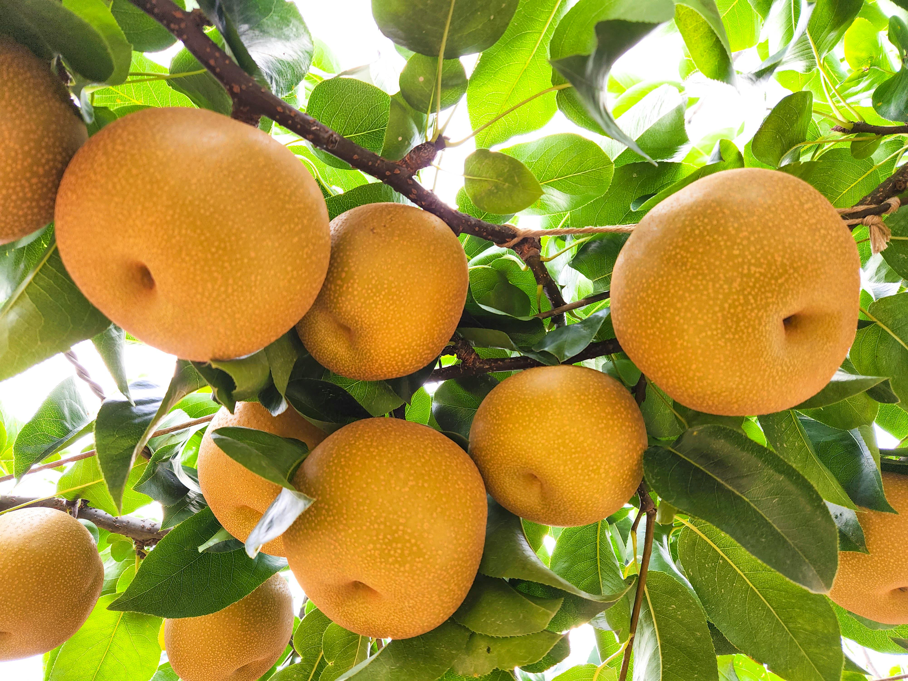

100%大安溪風土孕育
在地品牌敘事
山城卓蘭的水果故鄉
來自大安溪畔的甜美果香
卓蘭位於苗栗縣東南部，依傍大安溪流域，擁有充足日照、良好排水與日夜溫差大的氣候條件。多年來，當地果農順應四季變化種植優質水果，累積豐富栽培經驗。每一顆水果不只是農產品，更承載著卓蘭土地的氣候條件與農業智慧。
| 水果種類 | 最佳品嚐產季 |
|---|---|
| 柑橘 | 11 月至翌年 5 月 |
| 楊桃 | 9 月至翌年 4 月 |
| 葡萄 | 7 月至 9 月、12 月至翌年 2 月 |
| 水梨 | 5 月至 7 月、9 月至 10 月 |
擔心買到冷藏催熟、或是非最佳產地產季的非時令水果。
網頁上照片看起來都差不多，缺乏明確透明的規格與分級標準。
沒辦法親自到現場挑選，害怕配送到府時果實損壞或品質參差不齊。
市面上宣稱「產地直送」的商家眾多，卻沒有實質的檢驗履歷。
| 分級層次 | 外觀指標 | 糖度標準 | 最適合受眾與場景 |
|---|---|---|---|
| 特級 (Premium) | 果形極為完美、無瑕疵 | 最高標準 13 度以上 | 商務高級送禮、年節伴手禮 |
| 優級 (Excellent) | 果形良好、極輕微自然風疤 | 標準 11 - 12.9 度 | 親子家庭安心吃、自享送禮 |
| 良級 (Good) | 具自然生長痕跡不影響風味 | 大眾 10 - 10.9 度 | 家庭高性價比日常食用 |

卓蘭位於苗栗縣東南部，依傍大安溪流域，擁有充足日照、良好排水與日夜溫差大的氣候條件。多年來，當地果農順應四季變化種植優質水果，累積豐富栽培經驗。每一顆水果不只是農產品，更承載著卓蘭土地的氣候條件與農業智慧。
掃描包裝上 QR Code 即可透明追溯生產果農、施肥施藥紀錄，保障食安。
與卓蘭大安溪流域優質在地小農直接契作，保證公平貿易。
建議收到後立即開箱檢查。楊桃與柑橘可置於陰涼通風處；葡萄與水梨則建議直接低溫冷藏，以維持絕佳風味。
下單後約 2-4 個工作天內出貨，出貨後低溫配送可於 24 小時內送達。
不論是企業大宗高質感送禮，還是為了給親子家庭安心吃，填寫下方表單，我們將由專人立刻為您安排。